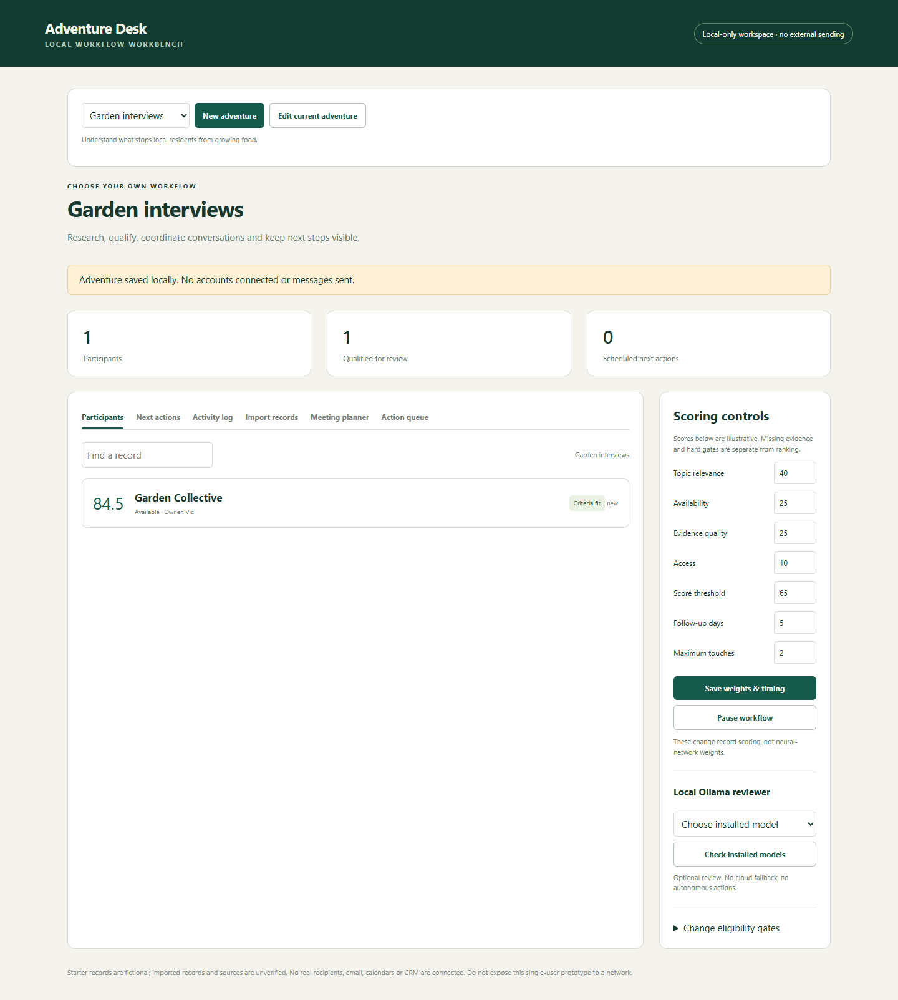

Adventure Desk
Turn an outreach or research list into a clear next-action queue, with evidence, ownership and follow-up in one local workspace.
Choose your own adventure
Start with sales discovery, partnerships, research interviews, event outreach or investment sourcing. Or define a custom objective, record labels and four scoring criteria. Each adventure keeps its records and settings separate.
Build 1 status: working local prototype. No email, CRM or calendar is connected. Outreach and meeting actions are explicitly simulated or local plans. The app does not send messages.

View the mobile-layout screenshot. The application runs locally; this page is the public product showcase, not a hosted app.

Two-minute demo
- Create a research adventure with a clear objective.
- Preview and import a fictional CSV record, then inspect its evidence and scores.
- Open the action queue, prepare a draft and simulate a reply. Show that replies stop outreach follow-ups.
- Switch back to investment sourcing to show that data stays separate. Show durable opt-out protection and the evidence revision history.
Living PRD · v1
1. Reachable user and job
Initial user: me, organizing a list of people or organizations to research and contact. The first outside-user test would be with a classmate who organizes interviews or partnership conversations; that test has not happened yet.
Before: evidence, outreach status and next steps can become scattered across a list, notes and messages. It is difficult to see who owns a record, what is missing and whether a follow-up should stop. This is the problem hypothesis, not a validated finding from customer interviews.
After: in one sitting, define an objective, import a list, review evidence, assign ownership and see the next safe internal action for every record.
2. One core workflow
Objective → CSV preview/import → evidence and criteria review → owner assignment → next-action queue → reviewable draft or local meeting/next-step plan.
The prototype includes provenance references, unknown scores, duplicate checks, adjustable weights and waiting periods, a pause control and an audit trail. Source references are not fetched or verified automatically. A local Ollama model can summarize selected evidence; it cannot change scores or execute actions.
3. Three explicit non-goals
- Autonomous email sending, real calendar booking or CRM synchronization.
- A general visual branching-automation platform or a company-wide MCP service.
- Production multi-user security, model fine-tuning or automated consequential decisions about people.
4. Architecture and riskiest assumption
Architecture: browser UI → localhost Python server → SQLite per adventure, with an optional local Ollama evidence review. Scoring, stop rules and scheduling checks are deterministic. There is no cloud-model fallback.
Riskiest assumption: a clear next-action queue will reduce coordination effort enough to justify another tool instead of a spreadsheet or existing CRM. This has not been validated.
Next test: ask one reachable organizer to complete a short synthetic list-replay task with their usual method and this prototype. Measure task time, missing-next-step errors and whether they can explain the queue. A proposed success threshold is fewer missed next steps without extra effort; it is not a measured result.
5. Evidence and economics
Build 1 log · November 9
What was built
A local Python/SQLite prototype with isolated adventures, configurable criteria, CSV intake, evidence history, action queues, drafts, local meeting plans and next-step tasks. Optional Ollama inference uses an already installed model. The direction changed from investment sourcing to a configurable workflow for several outreach/research use cases.
What I learned with AI
The useful separation is between a model that helps read evidence and deterministic rules that control actions. I used AI-assisted implementation and solo hypothesis-driven verification. Adjustable scoring weights, follow-up waits and neural model weights are different concepts. This prototype changes the first two, not model parameters.
Terminus episodes 1–2 completion and personal reflections are not verified here. No completion claim is being made.
What broke and changed
- Windows tests exposed SQLite connections left open. Explicit connection cleanup fixed the file locks.
- An opt-out could be overwritten by a later reply state. Durable suppression now survives later events and applies to matching entities across adventures.
- Two open evidence forms could overwrite one another. Version checks now reject stale edits.
- Blank or truncated model responses looked successful. The adapter now rejects incomplete results.
- Generalizing labels alone would reinterpret old investment scores. Separate adventure databases and a criterion-change guard preserve their meaning.
Verification and limits
44 unit/API tests pass. Three headless Edge suites checked intake-to-meeting flow, workflow hardening and a noninvestment adventure from creation through import, draft, switching and reload. Desktop/mobile checks found no page errors or horizontal overflow. Tests use temporary databases and fictional data. No real outreach was sent. Production security, customer demand and broad model accuracy remain unverified.
Actual cost and time
New paid software or API purchases made for this build: none recorded. Existing AI subscriptions, PC hardware and electricity are not included; total spend has not been reconciled.
Time estimate: approximately 5 hours, as my own estimate including idea exploration and research. This is not measured coding time.
Git history: preparation is current work; earlier local development was not recorded as personal Git commits. No backdated commits are being claimed. The course's two-separate-days weekly commit requirement must be assessed against actual history.
Next build
Validate the core flow with an outside user, improve the most confusing steps and establish actual time/cost measurements. PostHog account setup is a separate Week 1 task; instrumentation and verified events belong to Build 2. Analytics is not installed on this draft page or the local app.